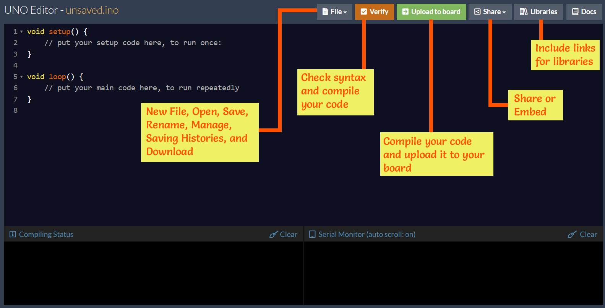

Arduino UNO
The UNO Editor Docs go over many of the syntax and specifics of the Arduino language and the UNO Editor. For more information, visit the Arduino Reference Page.
The Arduino is a microcontroller board that can be programmed to control electrical devices such as lights and motors. They're often used to make quadcopters, thermostats, 3D printers, and more.
The Arduino language is based on C/C++, but also has many of its own special functions and constants. The main structure of an Arduino program, called a sketch, includes a setup function and a continuous loop function. The setup runs once, and the loop runs continuously after that for as long as the Arduino is powered.
It looks like this:
//The setup runs once when the Arduino is powered/turned on
void setup() {
//Your setup code goes in here
}
//The loop runs continuously, starting after the setup is finished running.
void loop() {
//The rest of your code goes in here
}
The Arduino can be programmed using the Arduino IDE when using PCs, Macs, or Linux computers. When using a Chromebook, the Arduino can be programmed using the UNO editor on the OYOclass platform.
UNO Editor
The UNO editor is a development environment that can compile and upload your code to an Arduino UNO. The editor works on Chromebooks, PCs, Macs, and Linux computers, allowing you to use devices you might not always be able to use with the standard Arduino IDE.
Another benefit of the UNO editor, it's lightning fast! The libraries are pre-compiled, so only the code you type has to be compiled.
User Interface

File
The File button is where you will find the new file, open, save, rename, and download options. This is also where you can manage and delete your files, and view your saving histories (older versions).
Note that when saving or renaming a file, you must keep the .ino file extension.
Verify
The Verify button checks your code for syntax errors and compiles it. Compilation is the process of translating one language to another. In this case, the Arduino code is translated into the machine code that the Arduino understands.
If your code has never been saved, the Verify button will prompt you to save for the first time. After your code has been saved once, the Verify button will save your work each time it's clicked.
Upload to board
The Upload to board button will compile your code, then upload, or flash, your code to the board. When you access the UNO Editor from the Apps dropdown, clicking this button will prompt you to open the app in a new tab. This is necessary to allow you to upload code from the Editor to your board.
Once the page is opened in a new tab, you can click the "Upload to Board" button again to initiate the flash code process. The browser will pop-up a window to ask you to select the UNO board to connect like below:
In the modal window you will see a list of UNO boards currently connected to your computer. If you only plug one board in, then you should only see one item listed. This depends on different operating systems, and you may see different names for your board:
- In Windows, the name may be shown as "Arduino UNO"
- In MacBook / MacOS, the name may be shown as "IOUSBHost Device (cb.usbmodem141101)", or something similar.
- In Chromebook and Linux, the name may be shown as "0043 (ttyACM0)"
Select your board then click "Connect". Once connected, your code will be flashed to the board. For more details on "upload steps", you can check on this page here »
Compiling Status
The compiling status is shown in the window in the lower left hand corner of the editor. This window will inform you of the compiling status and let you know when your code has been uploaded to the board. If there are any syntax errors in your code, the error reports will appear here.
Serial Monitor
The serial monitor is shown in the window in the lower right hand corner of the editor. It allows you to send and receive messages to and from your Arduino board. The serial monitor is set to auto scroll by default, but it can be turned off. The serial monitor can also be cleared by using the clear button.
The serial monitor in the UNO editor MUST be used with a delay of 100ms or more in the loop() when repeatedly printing to the serial monitor. This may be accomplished by other processes being computed in the code, or by use of a delay() function. If there is no delay, the editor can enter a continuous loop, unable to process any other commands. This can crash your browser and force you to restart.
Credit
https://www.arduino.cc/reference/en/